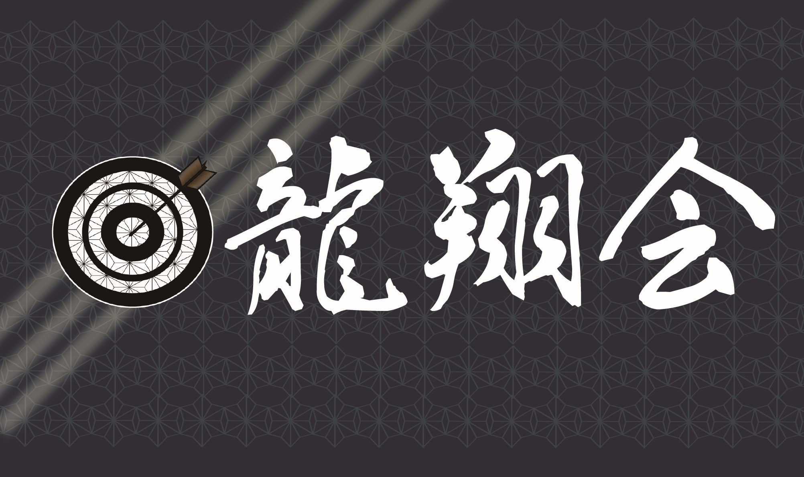
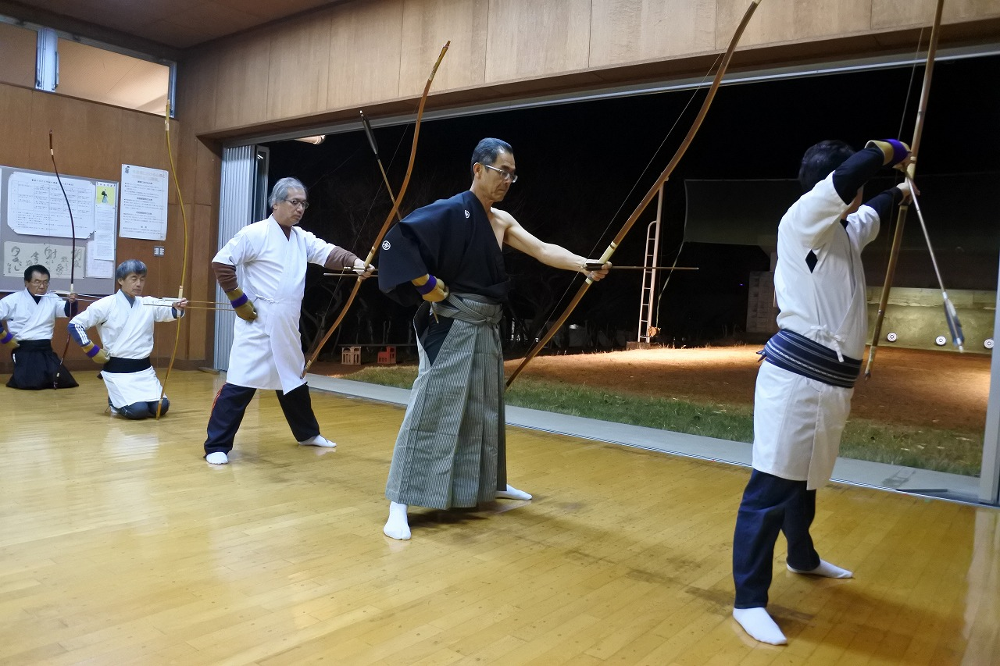

「礼に始まり、礼に終わる」。
弓道は己の心と向き合い、平常心を養う武道であり求道の道。
スクロールすると、弓道の深奥が移ろいます。
写真に触れると、同じ場所・所作の
もう一つの瞬間に入れ替わります。
| 所属組織 | 茨城県弓道連盟 龍ヶ崎支部 龍翔会 |
|---|---|
| 活動拠点 | 龍ヶ崎市立 龍ヶ崎中学校 弓道場（〒301-0837 茨城県龍ヶ崎市根町3777） 近的 28m / 5人立 |
| 稽古日程 |
毎週 火曜日・木曜日・土曜日 19:00〜21:00 第1・第3 日曜日 10:00〜12:00 |
| 入門・見学 |
初心者教室は毎年6月をめどに開催しており、見学は随時受け付けております。 弓道用具をお持ちでない方も安心してご相談ください。 |